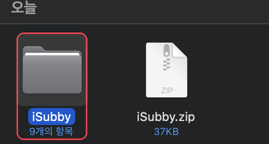
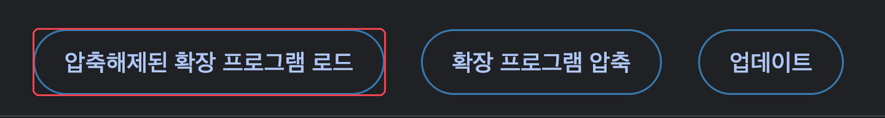
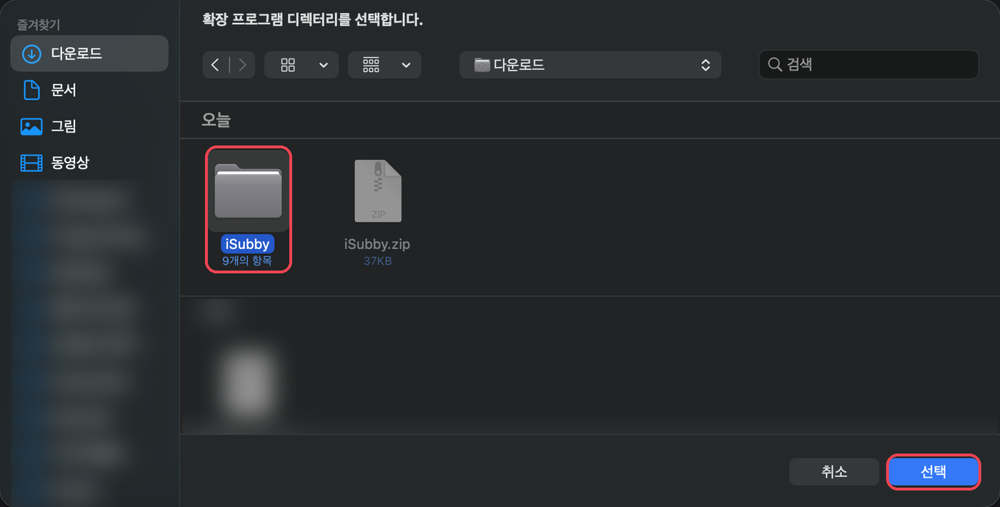
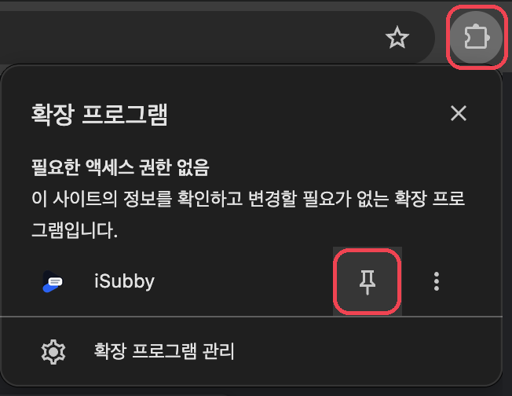
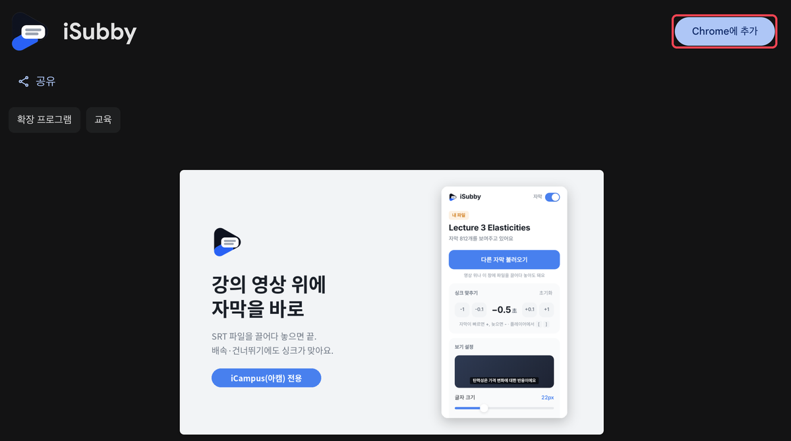
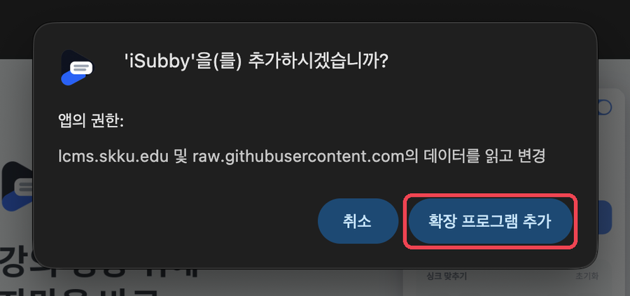
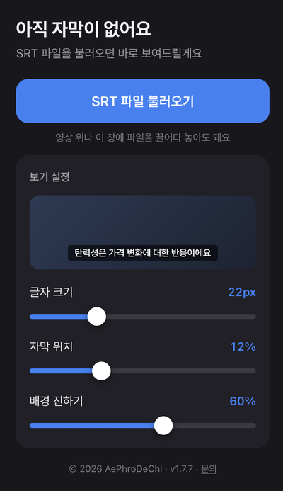

설치 방법
처음 한 번만 하면 돼요. 3분이면 끝나요. 새 버전이 나오면 다시 받아서 덮어써야 해요.
받은 파일 압축 풀기
위 버튼으로 받은 iSubby.zip의 압축을 풀어요.

iSubby 폴더가 생겨요.윈도우: zip을 오른쪽 클릭 → 압축 풀기 → 압축 풀기 버튼.
iSubby 폴더를 문서처럼 계속 둘 곳으로 먼저 옮겨두세요. 크롬에 등록한 뒤에는 폴더를 옮기거나 지우면 확장이 작동하지 않아요.확장 프로그램 관리 화면 열기
쓰는 브라우저를 고르고, 아래 주소를 복사해서 주소창에 붙여넣으세요.
chrome://extensions
오른쪽 위 "개발자 모드" 켜기
스위치를 눌러 파랗게 켜요.

"압축해제된 확장 프로그램 로드" → iSubby 폴더 선택
왼쪽 위에 나타난 버튼을 누르고, 1단계에서 압축 푼 iSubby 폴더를 골라 선택을 눌러요.



툴바에 고정하기
주소창 오른쪽 퍼즐 조각 아이콘을 누르고, iSubby 옆 핀을 눌러 고정해요.


크롬 웹 스토어에서 버튼 몇 번이면 끝나요. 새 버전도 자동으로 받아요.
"Chrome에 추가" 누르기
위의 Chrome에 추가 버튼을 누르면 크롬 웹 스토어의 iSubby 페이지가 열려요. 거기서 다시 Chrome에 추가 → 확장 프로그램 추가를 누르세요.


툴바에 고정하기
주소창 오른쪽 퍼즐 조각 아이콘을 누르고, iSubby 옆 핀을 눌러 고정해요.
예전에 zip으로 설치했다면 그 iSubby는 삭제
주소창에 chrome://extensions를 입력하고, iSubby가 두 개 보이면 새로고침(↻) 버튼이 있는 쪽이 zip으로 설치한 거예요. 그쪽을 삭제하세요.

사용법
아캠에서 강의 영상을 열면 바로 쓸 수 있어요.

자막 보고, 대본처럼 훑어보기
- 공유 자막은 자동으로 떠요. 영상을 열기만 하면 돼요.
- T 키나 플레이어 오른쪽 위 버튼으로 자막 목록을 펼쳐요. 지금 줄이 강조되고, 줄을 누르면 그 장면으로 이동해요.
- 목록 위 검색창에 단어를 넣으면 그 단어가 나온 부분만 모아 보여줘요. 시험 공부할 때 편해요.
- 공유 자막은 AI 음성 인식으로 만들어서 용어·숫자가 가끔 틀릴 수 있어요. 틀린 줄을 누르고 목록 위 오류 신고로 알려 주세요. 시간과 자막이 자동으로 담겨요.
자막 있는 강의 한눈에 찾기
- 자막이 있는 강의 옆에 자막 ✓가 붙어요.
- Business Statistics · Financial Accounting · Microeconomics 과목에서 보여요.
- 분반이 달라도 같은 녹화본이면 자막이 떠요. 안 뜨면 위쪽 목록 복사를 눌러 보내 주세요.

내 자막 불러오고 보기 좋게 맞추기
- SRT 파일 불러오기를 누르거나, 파일을 영상 위로 끌어다 놓아요.
- 자막이 빠르거나 느리면 싱크 버튼이나 [ ] 키로 0.5초씩 맞춰요.
- 글자 크기·위치·배경 진하기를 바꾸고, 오른쪽 위 스위치나 Shift+S로 자막을 켜고 꺼요.
- 궁금한 게 있으면 맨 아래 문의를 눌러 바로 메일을 보내요.
자주 묻는 질문
스토어에서 설치할 때 "주의해서 진행하시기 바랍니다" 창이 떠요
괜찮아요. iSubby에 문제가 있는 게 아니라, 크롬의 향상된 세이프 브라우징을 켠 경우 새로 등록된 개발자의 확장에 뜨는 안내예요. 설치 계속을 누르면 정상적으로 설치돼요. 몇 달이 지나면 이 창은 자동으로 사라져요.
"매니페스트 파일이 없거나 읽을 수 없습니다" 오류가 떠요
폴더를 잘못 골랐을 때 나와요. manifest.json 파일이 바로 보이는 폴더를 골라야 해요. 윈도우에서 압축을 풀지 않은 zip 안의 폴더를 고른 경우에도 이 오류가 나니, 1단계대로 먼저 압축을 풀어주세요.
크롬을 켤 때 "개발자 모드 확장 프로그램 사용 중지" 알림이 떠요
스토어 밖에서 설치한 확장에 크롬이 띄우는 일반 안내예요. 사용 중지가 아니라 창을 닫거나 취소를 누르면 그대로 쓸 수 있어요. 크롬 웹 스토어 등록이 끝나면 이 알림 없이 설치할 수 있게 바꿀 예정이에요.
강의 영상을 열었는데 자막이 안 떠요
- 영상이 다 로드된 뒤 페이지를 새로고침해 보세요.
- 팝업에 "아직 자막이 없어요"가 나오면, 그 강의에는 아직 공유 자막이 없는 거예요. 내 SRT를 불러와서 쓸 수 있어요.
- 팝업에 "강의를 알아보지 못했어요"가 나오면 학교 플레이어가 바뀐 경우일 수 있어요. 팝업의 문제 알리기로 알려주세요.
- 팝업 오른쪽 위 자막 스위치가 켜져 있는지 확인하세요.
친구는 자막이 뜨는데 나는 안 떠요 (분반이 달라요)
같은 녹화본이라도 분반마다 영상 번호가 달라서 그럴 수 있어요. 아캠 과목의 강의콘텐츠 페이지를 한 번 열면 자막이 있는 강의에 "자막 ✓"가 붙고, 위쪽에 iSubby 목록 복사 버튼이 보여요. 눌러서 자막 올리는 사람에게 카톡 등으로 보내주면 우리 분반에도 연결해 드려요. 한 학기에 과목당 한 번이면 돼요.
자막이 틀린 곳이 있어요
공유 자막은 AI 음성 인식으로 만든 뒤 한 번 다듬은 거라, 전문 용어·숫자·이름이 가끔 틀릴 수 있어요. 숫자나 수식이 중요한 부분은 영상 소리와 강의 자료로 꼭 확인해 주세요. 틀린 줄을 찾으면 자막 목록(T)에서 그 줄을 누르고 오류 신고를 눌러 주세요. 고쳐서 다시 올릴게요.
등록한 뒤에 폴더를 옮겨도 되나요?
안 돼요. 크롬은 등록할 때의 폴더 위치에서 파일을 읽어서, 옮기거나 이름을 바꾸면 확장이 꺼져요. 이미 옮겼다면 확장 프로그램 관리 화면에서 iSubby를 삭제하고, 새 위치의 폴더로 4단계를 다시 하세요. 이때 직접 불러온 내 자막과 설정은 초기화되지만, 공유 자막은 다시 자동으로 받아와요.
새 버전은 어떻게 받아요?
크롬 웹 스토어로 설치했다면 따로 할 일 없이 자동으로 업데이트돼요(심사를 거쳐서 zip보다 며칠 늦을 수 있어요).
zip으로 설치했다면 이 페이지에서 새 zip을 받아 압축을 풀고, 기존 iSubby 폴더 안의 파일을 새 파일로 바꿔 넣은 뒤 확장 프로그램 관리 화면에서 iSubby의 새로고침(↻) 버튼을 누르세요. 불러온 자막과 설정은 그대로 남아요.
휴대폰이나 태블릿에서도 되나요?
아니요. 모바일 브라우저는 확장 프로그램을 지원하지 않아서 PC에서만 쓸 수 있어요.
내 정보가 어딘가로 전송되나요?
아니요. 불러온 자막과 설정은 내 브라우저에만 저장돼요. 자세한 내용은 개인정보처리방침을 확인하세요.